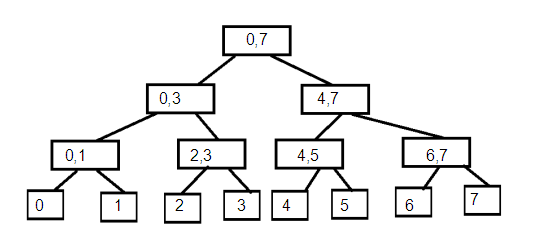
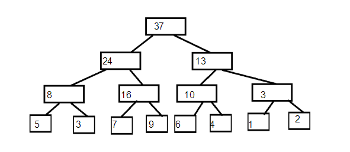
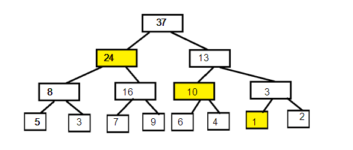
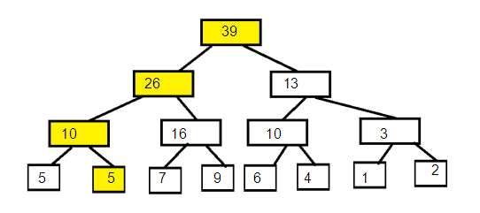

引入：
我们经常会遇到需要维护一个序列的问题，例如，给定一个整数序列，每次操作会修改某个位置或某个区间的值，或是询问你序列中的某个区间内所有数的和。或许你可能回去暴力出奇迹或者使用前缀和，但是当数据很大时，时间复杂度明显是受不了的。那么，就需要引入一种时间复杂度相对较小的数据结构 ——线段树
目录
基础
├ 关于线段树
├ 建树
├ 区间查询
└ 单点修改
进阶
├ 延迟标记
│ └ 区间修改 单点查询
├ 标记下传
└ 标记永久化
注：本文用到了位运算优化常数，不会的小伙伴可看这篇博客【传送门】
Ⅰ 基础篇
线段树是一课二叉树树上的每一个结点对应序列的一段区间，如下图：

不难发现，根节点对应的区间时[0,n-1]，而每个结点对应一个区间[l,r]，且当l=r时，该结点为叶结点，无左右儿子，否则令 mid = (l + r) / 2 ,则左儿子对应的区间为[l,mid]，右儿子为[mid+1,r]。同时，也不难发现，最后一行有n个结点，倒数第二行有n/2个结点，倒数第三行有n/4个结点，以此便可以推出一个线段树有n+n/2+n/4+...+1=2*n+1个结点，但是要注意，线段树数组务必要开4倍。设线段树的深度为h，那么h为O(logn)级别，当我们需要维护的序列长度为2的整数次幂时，这个线段数为满二叉树，否则最后一层可能不满
注：接下来的一系列操作都以求区间和为例
设序列a：5,3,7,9,6,4,1,2，我们将其用线段树构建出来，即
对应的区间和如图

从图中可以看出除叶结点区间和为它本身外，其他节点的区间和均为其左右儿子区间和之和。以此，可以通过递归建树，并在递归后对其区间和进行维护
1 void build(int k,int l,int r){ //k为结点编号，l为区间左端点，r为区间右端点
2 if (l == r){ //如果该点为叶结点
3 sum[k] = a[l]; //区间和即为本身
4 return;
5 }
6 int mid = l + r >> 1; //取中间值，位运算优化常数
7 build(k << 1,l,mid); //构建左子树
8 build(k << 1 | 1,mid + 1,r); //构建右子树
9 sum[k] = sum[k << 1] + sum[k << 1 | 1]; //维护该区间区间和
10 }
如果我们要查询区间和[0,6]，那么我们需访问3个区间

那么在查询过程中，会有以下三种情况
├ 当前区间与需查询区间无交集，返回 0
├ 当前区间被需查询区间完全包含，返回该结点对应区间和
└ 当前区间与需查询区间有交集，但不被完全包含，递归其左右子树进行查询
1 int query(int k,int x,int y,int l,int r){ //k为结点编号，x为当前区间左端点，y为当前区间右端点，
2 //l为需查询区间左端点，r为需查询区间右端点
3 if (x > r || y < l) return 0; //如果无交集，返回0
4 if (x >= l && y <= r) return sum[k]; //如果完全包含，返回该结点区间和
5 int res = 0,mid = x + y >> 1;
6 res = query(k << 1,x,mid,l,r); //递归左子树
7 res += query(k << 1 | 1,mid + 1,y,l,r); //递归右子树
8 return res;
9 }
假设要将a1加2，那么我们要重新计算4个结点的值
||
\/

那么，在修改时可以用递归的形式修改
在递归中，可能会有以下几种情况
├ 当前区间不包括需修改区间，直接返回
├ 找到需修改的叶结点，修改，返回
└ 有包含，但不是叶结点，递归修改左右子树
1 void change(int k,int l,int r,int p,int v){
2 if (l > p || r < p) return; //若该区间不包含需修改点，直接返回
3 if (l == r && l == p){ //若当前即为需修改结点
4 sum[l] += v; //修改
5 return;
6 }
7 int mid = l + r >> 1;
8 change(k << 1,l,mid,p,v);//递归修改左子树
9 change(k << 1 | 1,mid + 1,r,p,v);//递归修改右子树
10 sum[k] = sum[k << 1] + sum[k << 1 | 1];//维护区间和
11 }
Ⅱ 进阶篇
有时我们需要解决的不只是单点修改、区间询问，而是区间修改、区间询问，那么单纯使用以上的方法已经无法解决问题了，因为我们没有办法高效完成区间修改
以区间内所有数同时加上一个值，以及单点询问为例进行引入
区间修改，单点查询
考虑在每个结点上维护一个值addsum，表示这个结点所对应的区间内的所有数都加上了addsum。注意到根节点到叶结点[i,i]的路径会经过所有包含点[i,i]的区间对应结点，并且路径上所有结点都包括[i,i]这个点，所以路径经过的所有结点的addsum的值加起来便是当前结点的值
1）区间修改
我们还是采用递归的方式，对所求区间进行修改，我们在递归时，会遇上以下几种情况：
├ 当前区间不包括所修改区间，直接返回
├ 需修改区间完全包含当前区间，给当前区间的addsum加上需加的值
└ 否则对该结点的两个子树进行递归
1 void modify(int k,int l,int r,int x,int y,int v){//给区间[x,y]加上v
2 if (l > y || r < x) return; //无交集，直接返回
3 if (l >= x && r <= y){//完全包含
4 addsum[k] += v;
5 return;
6 }
7 int mid = l + r >>1;
8 modift(k << 1,l,mid,x,y,v);//递归左子树
9 modift(k << 1 | 1,mid + 1,r,x,y,v);//递归右子树
10 }
2）单点查询
在查询时，要从根结点查询至目标结点，会有以下几种情况
├ 当前为叶子结点（需查询结点），返回当前结点的addsum值
├ 目标结点编号小于等于当前结点对应区间的中点编号，说明目标结点在左子树，返回递归左子树得到的值加上该点的
│ addsum
└ 否则说明在右子树，返回递归右子树得到的值加上该点的addsum
1 int query(int k,int l,int r,int p){
2 if (l == r) return addsum[k];
3 int mid = l + r >> 1;
4 if (p <= mid)
5 return query(k << 1,l,mid,p) + addsum[k];
6 else
7 return query(k << 1 | 1,mid + 1,r,p) + addsum[k];
8 } 再回到区间修改区间查询这一问题上，此时打标记的方法也不可用了，若是遍历所有会产生影响的结点并将其加起来，复杂度无法接受
那么常用的方法有两种：一是标记下传，二是标记永久化。这俩兄弟有个非常nb的名字——Lazy-Tag（懒标记）
执行修改操作时，我们找到对应的结点，修改add(addsum)，并且得到更新的sum值，而这个结点所有的祖先都能通过 sum[k]=sum[k*2]+sum[k*2+1] 得到当前修改后正确的区间和，而这个结点的子节点无法立即更新，因为这样的子节点太多，所以时间复杂度他又炸了。。。
解决的方案是（敲黑板）：当我们用到这些子结点的信息时再进行更新，其实就是在某个结点递归下去，将当前节点的add下传到两个子结点，更新两个子结点的sum和add，并将当前结点的add清零。这样操作以后，当我们访问一个节点时，根节点到他的路径上的add值都已经下传更新到它的sum上了，所以它的sum便是它对应的区间和。
1 》 打标记（这里这是单纯的打标记）
我们在给一个数打标记时，给他打上了标记，就意味着它疫检合格了（不是下面的所有子节点都加上了这个数，那么它的区间和便要进行维护（l为区间左端点，r为区间右端点，v为所加的数），他的区间和变成了 sum[k] += (r-1+1) *v
1 void Add(int k,int l,int r,int v){
2 add[k] += v;
3 sum[k] += (r - l + 1) * v;
4 }2 》 标记下传
我们这里又双叒叕用递归实现，如果需下传的这个结点的add为0，跳出；否则下传至左右子树（其实就是调用一下刚刚的Add）
注意：记得将该点add清零！！！
1 void pushdown(int k,int l,int r,int mid){
2 if (add[k] == 0) return;
3 Add(k << 1,l,mid,add[k]);
4 Add(k << 1 | 1,mid + 1,r,add[k]);
5 add[k] = 0;
6 }3 》 区间修改
我们这里又双叒叕用递归实现；
他会有以下几种情况：
├ 需修改区间完全包含当前区间，给当前区间打标记，就可以返回了
└ 在不完全包含的情况下，先下传一下标记，之后又有两种情况，最后维护一下该节点区间和
├ 需修改区间的左边界在当前区间中点左边，遍历一次左子树
└ 需修改区间的右边界在当前区间中点右边，遍历一次右子树
1 void modify(int k,int l,int r,int x,int y,int v){
2 if (l >= x && r <= y) return Add(k,l,r,v);
3 int mid = l + r >> 1;
4 pushdown(k,l,r,mid);
5 if (x <= mid) modify(k << 1,l,mid,x,y,v);
6 if (mid < y) modify(k << 1 | 1,mid + 1,r,x,y,v);
7 sum[k] = sum[k << 1] + sum[k << 1 | 1];
8 }4 》 区间查询
我们这里又双叒叕用递归实现；
他会有以下几种情况：
├ 需查询区间完全包含当前区间，就可以返回当前区间和
└ 在不完全包含的情况下，先下传一下标记，之后又有两种情况，定义res储存结果
├ 如需查询区间的左边界在当前区间中点左边，遍历一次左子树，res加一次
└ 如需查询区间的右边界在当前区间中点右边，遍历一次右子树，res加一次
1 int query(int k,int l,int r,int x,int y){
2 if (l >= x && r <= y)
3 return sum[k];
4 int mid = l + r >> 1;
5 int res = 0;
6 pushdown(k,l,r,mid);
7 if (x <= mid)
8 res += query(k << 1,l,mid,x,y);
9 if (mid < y)
10 res += query(k << 1 | 1,mid + 1,r,x,y);
11 return res;
12 }
另一种方法是不下传add标记，改为在询问过程中计算每个遇到的节点对当前询问的影响。为了保证询问的时间复杂度，子节点的影响须在修改操作时就计算好。因此实际上，sum这个值表示这个区间内所有的数共同加上的值，sum表示这个区间内除了add之外其他值的和。
当然，区间的add值可能有一部分在祖先结点上，这在递归时累加即可，与区间修改单点查询相似
1 void modify(int k,int l,int r,int x,int y,int v){ //区间修改
2 if (l >= x && r <= y){
3 add[k] += v;
4 return;
5 }
6 sum[k] += (min(r,y) - max(l,x) + 1) * v;
7 int mid = l + r >> 1;
8 if (x <= mid) modify(k << 1,l,mid,x,y,v);
9 if (mid < y) modify(k << 1 | 1,mid + 1,r,x,y,v);
10 }
11 int query(int k,int l,int r,int x,int y){ //查询
12 if (l >= x && r <= y)
13 return sum[k] + (r - l + 1) * add[k];
14 int mid = l + r >> 1;
15 int res = (min(r,y) - max(l,x) + 1) * add[k];
16 if (x <= mid)
17 res += query(k << 1,l,mid,x,y);
18 if (mid < y)
19 res += query(k << 1 | 1,mid + 1,r,x,y);
20 return res;
21 }
验证题目：【戳这里】
如果您有什么见解或疑问，欢迎在评论区提出(￣▽￣)／
第一次发布时间：2019.11.28 完成度：45%
第二次发布时间：2019.12.5 完成度：80%
第三次发布时间：2019.12.8 初版已完成